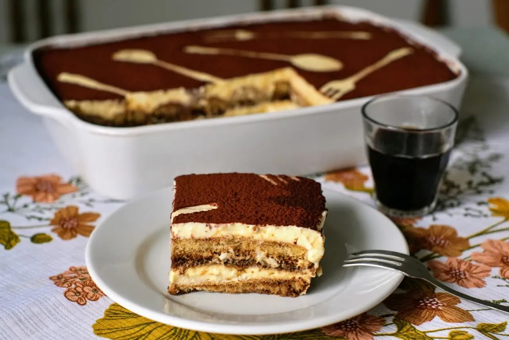

Classic Tiramisu
The famous Italian "pick-me-up" — layers of coffee-soaked ladyfingers and silky mascarpone cream.

Ingredients
- 6 egg yolks
- 150 g (¾ cup) sugar
- 500 g mascarpone cheese, room temperature
- 300 ml strong espresso, cooled
- 3 tbsp coffee liqueur (optional)
- 250 g ladyfinger biscuits (savoiardi)
- Unsweetened cocoa powder, for dusting
- Dark chocolate shavings (optional)
Instructions
- Whisk the egg yolks and sugar in a heatproof bowl over simmering water for about 10 minutes, until pale and thick. Remove from the heat and let it cool slightly.
- Fold the mascarpone into the egg mixture until smooth and creamy. Don't overmix — stop as soon as it comes together.
- Combine the cooled espresso and coffee liqueur in a shallow dish.
- Dip each ladyfinger into the coffee for one second per side — they should be moist, not soggy.
- Arrange a layer of dipped ladyfingers in a 23×33 cm dish, then spread half of the mascarpone cream on top.
- Repeat with a second layer of ladyfingers and the remaining cream.
- Cover and refrigerate for at least 4 hours, ideally overnight.
- Just before serving, dust generously with cocoa powder and sprinkle with chocolate shavings.
Chef's tip
The one-second dip is the secret. Ladyfingers act like sponges — any longer and your tiramisu turns into coffee soup.